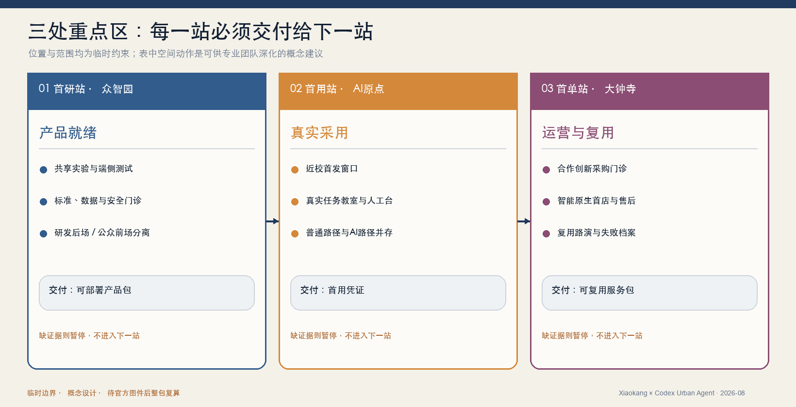

京张首发线 / JINGZHANG FIRST MILE
以原创‘首程门’为共同标识，把已形成的京张公共空间骨架升级为 AI 采用基础设施：三站连续完成产品就绪、真实首用、可核验首单与复用交接，并把普通路径、人工接管、暂停退出和公开证据写入空间与运营。
京张首发线 / JINGZHANG FIRST MILE

本方案只解决一个被大量“AI 展示区”忽略的问题：技术离开实验室以后，谁帮助它获得第一位真实用户，并把一次使用变成可运营、可采购、可复用的城市服务？ 京张首发线以众智园、AI 原点、大钟寺完成“产品就绪—真实首用—首单复用”的连续交接；其最小公共承诺是，AI 撤除后，普通路径、人工服务和公共空间仍然成立。评委可以从任务旅程、首程护照、数量清单、G0—G4 门禁和失败档案直接复核这套机制，而不必相信一张未来效果图。
百年京张文化与 AI 新文化：从工程自主到城市采用

本方案没有把“百年京张”当作复古装饰，而把它理解为一种仍可继续工作的城市文化：一百年前，京张铁路以工程自主完成从知识到真实运行的第一程；今天，海淀需要帮助 AI 完成从模型到真实城市的第一公里。两者共同的价值不是速度崇拜，而是自主、求真、协作、可达与公开学习。这一主线把铁路语法转成五项制度：轨线成为三站连续采用链，枕木成为 G0—G4 证据门，站台成为平等首用界面，编组成为研发者—用户—运营者的责任交接，时刻表成为春夏秋冬可复核的年度节律。
文化表达因此同时进入空间、运营与公共记忆：清华园站、大钟寺与既有京张遗址是方位和叙事锚点；“首程门”不是另造一个科技图腾，而是把开放入口、证据状态、人工服务和退出权公开给城市；年度荣誉不奖励发布声量，而记录真实问题被解决、普通用户完成任务、陌生运营者接管以及失败被公开复盘。文化线是本方案的价值判断，不主张伪造铁路史实、文保边界或官方纪念口径 来源 来源。
设计依据与资料清单
本 formal 方案以北京市规划和自然资源委员会海淀分局发布的《百年京张AI创新带城市设计国际方案征集资格预审公告》为第一依据，并以 brief/site-package/ 中经维护者登记的临时粗略边界、重点区域、枚举、指标和来源清单为机器可读依据。AI agent 在生成方案前必须读取 design_brief.json、allowed_design_space.json、sources.json、enums/、ranges/、schemas/、data/source_registry.json 和 data/processed/agent_fact_pack.md，并用 project_scope_summary.csv、agent_task_requirements.csv、source_use_matrix.csv、missing_data_checklist.csv 建立任务、范围、资料用途和缺口清单。所有设计判断都要拆分为可追溯来源、可复算指标、可校验图层和可人工复核假设。公告要求方案达到控制性详细规划的城市设计深度和规划综合实施方案的城市设计深度，因此文本叙述不能替代 GeoJSON、指标表、A3 文册、A0 展板和 HTML 电子展示成果。
方案不是独立愿景文本，而是从公告、面向智能体任务书和场地资料出发组织成果；本节只把最关键依据放在判断旁边 来源 来源 深度。完整来源和标准覆盖分别保存在 sources.json、standard_matrix.json 与 design_depth_matrix.json，不在正文重复机器索引。
资料登记表的使用边界如下 来源：
- data/source_registry.json 登记公开、清权与临时资料的用途边界。
- 当前登记摘要：formal 可用资料 5 条，背景资料 0 条，provisional-only 资料 1 条。
- agent 不得把 background_only 或 provisional_only 资料升级为 official boundary、法定控规、正式评分依据或政府实施承诺。
data/processed/agent_fact_pack.md 是本方案的阅读导航层，不是新的权威来源 来源。它帮助 agent 把三层范围、三处重点区、公告任务、agent.1-agent.6、资料可用性和缺资料事项组织成可读方案；事实判断仍需回到已登记的原始材料 来源 来源，完整来源关系由 sources.json 保存。

当前方案包在官方 SITE_BOUNDARY 或三处 KEY_AREA 尚未取得时，使用 brief/site-package/geometry/provisional_boundaries.geojson 生成临时 formal 几何。提交包中的 geometry/site_boundary.geojson 与 geometry/key_areas.geojson 均标注为 provisional_constraint、official_boundary=false，只能用于方案生成、自检、可视化和设计讨论，不能作为 official redline、审批依据、精确面积依据或法定控制结论。该组织方数据缺口本身不阻断内容评分；替换 official polygons 后，site boundary、key areas、land use、roads、green space、public space、buildings、phasing 和 metrics 均需重算。
本方案包的可评分状态为：临时边界，保留精度警示并待正式数据发布后复算；不阻断内容评分。因此，正文中的空间结构、场景、项目和指标均按“可讨论、可复核、可替换官方边界后重算”的原则写入；当官方边界和重点区 polygon 更新后，agent 必须重新运行资产生成、自检和图纸/HTML 流程，不能只替换单个文件。
边界解释可回到总体范围图层和面积复算 空间数据 指标。三处重点区则由独立图层和数量指标核对 空间数据 指标。这意味着读者可以从正文进入证据，但不必先读一串机器编号。
三层范围工作框架
方案按照公告确定的三个层次组织工作：统筹研究范围关注 43.6 平方公里的AI产业生态、战略定位、创新链和未来城市形态；总体设计范围关注 11.4 平方公里京张遗址公园周边 1-2 公里城市地区和产业区，要求形成城市更新总体框架、产业空间布局、交通市政支撑和城市风貌控制；重点区域范围关注 368.4 公顷三处详细设计地区，要求明确功能业态、建筑规模、拆改留分类、公共空间连通和交通组织。三层范围在 compliance_matrix.json 中逐条映射，保证公告 1.3、1.4、1.5 与 agent.1-agent.6 的必选任务都有章节、图层、指标、图纸和 HTML 证据。
三层工作框架的深度项由 深度 和 深度 约束，空间证据以 空间数据 与 空间数据 为准，任务依据以 标准 为准，范围索引以 来源 中 project_scope_summary.csv 的三层范围表为导航。

三层工作不是互相割裂的图纸集合。统筹研究决定产业链和城市形态判断，总体设计把判断落实到更新项目、空间结构和设施承载，重点区域详细设计验证具体地块、建筑、交通、公共空间和AI应用场景的可实施性。agent 生成方案时必须先锁定当前提交采用的 official 或 provisional 边界和约束，再生成用地、建筑、道路、绿地、公共空间、分期和AI服务节点，最后从这些图层复算指标并在正文解释哪些结论仍受 provisional boundary 限制。任何无法从结构化数据复算的面积、比例、规模或项目数量，不得写入正式结论。

这张图把采用链从抽象箭头落到真实城市关系：北段邻清河与科技高校群，适合产品就绪和安全交接；中段邻五道口、清华园旧址与轨道站，适合首位用户与高校—社区共测；南段邻大钟寺遗产、轨道与日常商业，适合验收、首单和复用。东西向道路、高校、社区与站点共同形成横向“首发口”，因此首发线不是只供参观的南北游线。底图来自已登记的 OSM 展示级方位数据，重点区仍为 provisional constraint，不用于测绘、红线、工程或审批 来源 [assumption:A-CONTEXT-MAP-001]。
本方案建议的总体概念为“京张首发线 / JINGZHANG FIRST MILE”。这里的“第一公里”不是长度，也不是一次新品发布会，而是 AI 从实验室离开后最容易断裂的一段路：有人提出真实问题，却没有明确的问题所有者；原型能够演示，却没有普通用户完成任务的证据；试点获得曝光，却没有运营交接、采购路径和重复使用；技术撤场后，空间、服务和责任随之消失。
京张首发线因此不再重复建设一条普通“测试走廊”，而是建设一套城市级首发操作系统：让一个 AI 产品依次获得首位真实用户、首个可运行场景、首笔可核验订单、首次复用扩散。众智园承担“首研站”，把算法原型变成有标准、有边界、可部署的产品；北京 AI 原点社区承担“首用站”，让高校、创业者、居民与一线运营者共同完成首轮真实任务；大钟寺承担“首单站”，把通过验证的服务接入企业采购、商业运营和跨区复制。中关村科技服务翼提供知识产权、合规、数据、资本和采购辅导，小月河场景赋能翼提供有问题所有者、有基线、有人工兜底的真实场景。该结构是概念建议，不代表政府采购、资金安排或实施承诺 来源 来源。
原创识别系统：“首程门 / First-Mile Gate”

“首程门”把方案的运营纪律压缩成一个可被记住、也能被执行的符号：开放门框代表创新带不是封闭园区；贯穿的轨线连接京张工程遗产与今天的采用流程；五道横向枕木对应 G0—G4，表示每一步都可以继续，也必须允许暂停；向前箭头表示只有证据通过才进入下一程。标识采用自有绘制的单线系统，不依赖第三方商标，可用于四种低成本载体：场站导视柱、首用证据护照、G0—G4 现场门牌和首发活动证章。它不是给建筑贴一层视觉包装，而是让公众和运营者在现场看见“当前在哪一道门、由谁负责、如何退出”。
首发流程由五道门组成，完整数量登记为 指标：
| 门禁 | 必须回答的问题 | 最小证据 | 未通过时的处理 |
|---|---|---|---|
| G0 真实问题 | 谁正在承受什么成本，谁有权定义问题 | 具名问题所有者、现有服务基线、受影响人群 | 不进入方案征集 |
| G1 产品就绪 | 原型是否在限定范围内安全、合规、可维护 | 数据清单、模型边界、人工接管、维护责任 | 退回众智园补证 |
| G2 首次使用 | 普通用户能否在真实场景完成任务并无损退出 | 任务完成、误导/投诉、非数字替代、现场记录 | 暂停并修订，不做宣传 |
| G3 首次采用 | 运营方是否愿意接管，成本和责任是否成立 | 培训签收、服务等级、成本区间、采购/合作状态 | 保留为研究原型 |
| G4 首次复用 | 换地点、换团队后是否仍产生公共或经营价值 | 复用包、版本差异、重复使用、退出复原 | 不扩大范围 |
空间结构采用“一线、三站、双翼、多点首发场景”。“一线”不是额外红线，而是研发—采用—运营—复用的工作流；“三站”不是三座孤立展馆，而是三个必须完成交接的城市工作面；“双翼”不是抽象箭头，而是专业服务供给与真实需求供给的双向接口。所有空间动作仍为可供专业团队深化的概念建议。
区域放大不是用一根箭头连接若干园区，而是明确输入与输出。北纬社区可为首研站带来早期团队，并接收产品就绪包；未来科学城与怀柔科学城可带来科研成果，并接收面向真实城市任务的验证证据 来源 来源 来源。
经开区可带来制造和产业场景，并接收经过运营验证的规模化服务；京津冀协作节点可提出跨区真实需求，并接收记录差异条件、培训、SLA 和退出方式的复用包。以上均为建议接口，不代表已建立合作 来源。
| 层级 | 设计问题 | 方案回答 | 数据落点 |
|---|---|---|---|
| 统筹研究范围 | AI产业生态和未来城市形态如何组织 | 建立“问题发现—产品就绪—首用采用—运营交接—复用扩散”的首发链 | compliance_matrix.json、standard_matrix.json |
| 总体设计范围 | 产业空间、城市更新、交通市政和风貌如何落图 | 用地、建筑、道路、绿地、公共空间和分期共同承载首发工作流 | 空间数据 空间数据 |
| 重点区域范围 | 三处片区如何形成连续交接 | 首研站解决产品就绪，首用站解决真实采用，首单站解决运营与复用 | 空间数据 深度 |
统筹研究范围产业与未来城市研究
海淀不缺高校、模型、人才、资本和发布活动，真正稀缺的是把这些要素变成可被真实使用、能够交给别人运营、并可在别处复用的产品化能力。因此，统筹研究的对象不是企业数量的静态盘点，而是四类断点：需求没有负责人、产品没有采用证据、试点没有运营交接、示范没有市场或公共采购路径。北京 2026 年场景工作已提出需求、能力、示范项目“三张清单”，并把首试首用、合作创新采购和形成市场订单放在同一条转化链上；本方案把这条政策方向翻译为空间与运营机制，不把它写成已获批准的项目安排 来源。
七个全球案例：从测试能力转向采用能力
| 案例 | 已验证的机制 | 对京张的转译 | 不照搬的条件 |
|---|---|---|---|
| 新加坡榜鹅数字园区 ODP | 数字孪生先做虚拟测试，再进入真实园区 | 众智园设置“模拟—限域—真实”三级产品就绪环境 | 国家级数据和平台权限不可假定 |
| 赫尔辛基 Mobility Lab | 企业、研究机构、城市和居民共同测试，并以新业务与跨城扩展为目标 | 场景不是参观项目，必须记录采用与复用证据 | 港口交通条件不可直接类比 |
| Test in Tallinn | 城市作为单一入口，协助对接部门、场地、数据、居民和服务单位 | 建立“京张首发窗口”，减少团队逐部门寻找入口的成本 | 法律豁免和城市授权需本地确认 |
| Boston New Urban Mechanics | 市政府内部小团队成为社区问题与初创原型之间的前门 | 首发运营团队从问题定义和居民关系开始，而非从设备采购开始 | 不复制其行政组织架构 |
| Toyota Woven City | Inventors 与居民/访客共同持续反馈，覆盖构思、验证和改进 | 把居民、店员、物业和基层服务者定义为共同开发者 | 私有测试城市的权限不可移植 |
| 欧盟实验空间与创新采购 | 沙盒、测试床、生活实验室和创新采购共同推动 lab-to-market uptake | G3 把运营交接、采购状态和成本证据列为扩大前置条件 | 不套用欧盟法律程序 |
| 北京场景开放机制 | 需求、能力、示范项目三张清单衔接首试首用和市场订单 | 建立“问题单—能力卡—首发凭证—复用包”本地工作流 | 不虚构采购金额、入选或政府背书 |
案例只支撑方法判断，不支撑法定空间控制。新加坡与赫尔辛基说明测试基础设施必须降低从虚拟验证到真实部署的成本 来源 来源；塔林与波士顿说明城市需要一个能找到责任部门、场地、居民和运营者的“前门” 来源 来源；Woven City 与欧盟实践进一步说明，持续用户反馈、合规支持和创新采购共同决定原型能否走出试验 来源 来源。
京张首发操作系统
首发线用四份公开、可移交的工作对象连接三区两翼：
1. 首发任务单：记录问题所有者、目标用户、当前流程、非 AI 基线、空间条件、数据边界和预算状态。 2. 假设与证据账本：每项声称写明来源、期间、状态、边界、下一步和停止条件；模拟数据永远不能冒充经营或公共服务结果。 3. 城市首发凭证：完成一次试点后记录版本、地点、人群、人工接管、缺陷、成本区间、责任人和是否允许复用。 4. 复用包：包含接口、培训、服务等级、退出恢复、许可和“换地点后哪些条件必须重测”，避免把一次活动包装成规模化。
这套操作系统的公共界面是“京张首发控制台”：它首先服务运营者，而不是装饰首页。控制台显示哪些任务在 G0—G4、谁正在等待什么证据、哪个场景被暂停、哪些人工服务仍可用；公众只看到经过脱敏且与自身权利有关的信息。它继承“现实优先、系统优先、长期复利”的构建原则，但所有本地工作经验只作为 agent 的方法校准，不被写成赛事事实或官方证据 标准 深度。
统筹研究不新增伪精确红线。产业策略最终必须回接用地、公共空间和服务设施，并在 official geometry 补齐后统一复算 标准 空间数据 空间数据。
总体设计范围城市更新与控规深度城市设计
总体设计范围要求达到控制性详细规划的城市设计深度。方案必须提出城市更新总体空间结构、低效空间识别、更新项目清单、实施政策建议、产业功能比例、空间组织模式、建筑总规模和综合承载能力评估。geometry/land_use.geojson 应完整覆盖设计边界且无重叠，geometry/buildings.geojson 应表达更新建筑基底或保留建筑基底，geometry/roads.geojson 应表达微循环、慢行和轨道接驳关系，metrics.json 应复算核心面积、比例和图层数量。
本节按照 标准 把控规深度内容拆成可审查对象：空间数据 表达用地结构，空间数据 表达建筑基底，空间数据 表达交通组织，指标 用于复核建筑基底面积，深度 与 深度 约束成果深度。
总体设计还必须支撑交通、轨道、市政和配套设施。方案应围绕轨道站点一体化、道路微循环、非机动车停放、停车供给、创新服务平台、人才生活服务、新型基础设施、分布式能源和端侧算力提出空间布局和实施路径。涉及建筑高度、开发强度、道路红线、退线和设施标准的内容，若尚无官方控制条件，应写为“待正式控规条件确认”，不得以 agent 推测值冒充审定指标。
首发线以五类可逆空间组件承接工作流：临街首层的首发窗口受理问题与团队；共享建筑内的产品化工位完成标准、数据、合规和运营设计；公共空间中的首用房间完成小规模真实任务；大钟寺的首单客厅支持采购咨询、服务签约和复用路演；全线的证据站牌显示项目状态、人工入口和退出方式。它们优先利用既有首层、园区公共界面、桥下与边角空间，新增建筑、设备点位和工程量均待 official geometry、权属、消防和市政条件确认 空间数据 深度。
重点区域详细设计
重点区域详细设计是必选项。众智园AI自主创新加速区应围绕国家人工智能平台、全栈自主创新、标准制定、安全治理、产业展示、对外交通、清河文化、低碳绿色创新交往环境和绿色空间AI场景提出详细方案。北京AI原点社区应围绕近校创新、成果孵化转化、人才特区、开源体系、品牌活动、建筑拆改留、成果展示发布、居住生活配套、校区园区慢行联系和轨道站点一体化提出详细方案。大钟寺AI产业聚集区应围绕领军企业、智能体、智能终端、内容消费、数据要素、数字资产、商业服务、规划绿地复合利用、大钟寺站一体化和路口四象限步行连通提出详细方案。
三处重点区域详细设计必须引用 空间数据、空间数据、空间数据，并由 深度 检查是否达到规划综合实施方案深度。若只描述“打造示范区”而没有功能、建筑、交通、公共空间和实施项目证据，应被视为未完成。

三处重点区域必须在 geometry/key_areas.geojson 中出现。若仓库已提供 official polygons，应作为 official_constraint 使用；若 official polygons 缺失，可暂用 provisional_constraint，但正文、HTML、sources、assumptions 和 self_check 必须说明它不能作为正式评分或审批依据。compliance_matrix.json 应分别覆盖公告 1.5.3.1、1.5.3.2、1.5.3.3。设计表达应包含功能业态、建筑规模、建筑形态、拆改留分类、公共空间系统、交通组织、慢行连通和实施项目。HTML 页面应能切换查看三处重点区域，A3 文册和 A0 展板应至少包含重点片区总图、局部详图和指标说明。
| 重点片区 | 首发角色 | 空间动作 | 必须完成的交接 | 证据引用 |
|---|---|---|---|---|
| 众智园AI自主创新加速区 | 首研站 / Build & Ready | 以共享实验、端侧测试、标准门诊和清河低碳公共界面组成产品就绪园；研发后场与公众试验前场分离 | 从“能演示”交付为有数据清单、失败边界、人工接管和维护方案的可部署产品 | 空间数据 深度 |
| 北京AI原点社区 | 首用站 / Use & Adopt | 以近校首发窗口、真实任务教室、居民/运营者共创桌和连续慢行链组成采用社区 | 从“技术团队定义需求”交付为用户完成任务、运营者愿意接管、普通路径仍可使用的首用凭证 | 空间数据 来源 |
| 大钟寺AI产业聚集区 | 首单站 / Operate & Scale | 以轨道四象限缝合、智能原生首店、合作创新采购门诊、复用路演厅和夜间服务街组成市场接口 | 从“一次试点”交付为有成本、服务等级、合同/采购状态、培训和退出条款的复用包 | 空间数据 指标 |
三站的价值不在各自设备数量，而在交接完整度：众智园不能把未完成产品化的原型直接送入公共空间；原点社区不能把一次好评直接写成市场需求；大钟寺不能把展示、意向或媒体曝光写成订单。每次跨站交接都需由上一站、下一站和受影响用户共同签署状态，失败项目也保留为可复查的公共知识。
三处真实场地：每一处只回答一个无法替代的问题

众智园的任务不是再做一座 AI 展馆，而是在清河、京张遗址公园与北段高校之间形成“研发后场—可见测试场—安全交接台”。公共路径始终连续；没有数据责任人、人工接管和维护方案的原型，停在 G1 之前。

AI 原点把五道口、清华园旧址、轨道站和高校日常人流连接为“普通路径—可选 AI 路径—人工台—首位用户圆桌”。真实采用的标准不是围观，而是普通人完成任务、可纠错、可转人工、可无损退出。

大钟寺把站口、遗产界面、公共客厅与日常商业组成连续到站环，让采购门诊、非消费停留、培训和复用档案共存。验收、费用、责任、采购状态、培训或退出任一空白，都不能把试点称为“首单”。三图的现场方位为展示级资料，精确落位仍须官方红线、现状测绘、产权、交通、消防、树木与文保专项复核。
从区域概念到可复核的尺度化模块
以下三张深化图采用概念研究模块，用于核对空间关系、最小尺寸、实施数量与停止条件；它们不是地块红线、现状测绘或施工图。模块落位前必须完成官方红线、产权、现状建筑、管线、树木、消防、交通、遗产与无障碍复核 [assumption:A-CONTROLS-001] [assumption:A-DESIGN-NODES-001]。
| 模块 | 研究范围与关键数量 | 公共空间底线 | 进入下一站前的停止条件 |
|---|---|---|---|
| 众智园产品就绪园 | 180 × 120 m（2.16 ha）；36 × 24 m 可见测试场；18 × 12 m 安全与数据门诊；18 × 12 m 运营交接实验室；12–20 m 生态缓冲 | 6 m 普通公共路径连续，研发后场与公众试验前场分离 | 无数据责任人、人工接管或维护方案，不进入 G1，不采购设备 |
| AI 原点首用社区 | 160 × 110 m（1.76 ha）；Ø18 m 首位用户圆桌；12 × 6 m 人工/申诉台；18 × 8 m 限量首发窗口 | 6 m 普通路径优先，3 m AI 路径可选，任何人均可无损退出 | 三项真实任务任一无法转人工或退出，立即暂停 G2 首用 |
| 大钟寺首单客厅 | 200 × 160 m（3.20 ha）；24 × 12 m 采购门诊；30 × 18 m 首单厅；24 × 12 m 复用/失败档案；6 m 到站环 | 轨道到站、路口缝合与非消费停留连续；遗产缓冲宽度保持待定 | 验收、费用、责任或退出条款任一空白，不得把试点称为首单 |


三处旗舰体验遵守同一条公共空间底线，却有不同的主角：众智园由安全员和研发者共同完成可见交接；AI 原点由普通居民、残障使用者和一线服务人员共同完成真实任务；大钟寺由小团队、运营者与采购咨询人员把一次试点写成可验收、可培训、可退出的复用条件。图像只用于表达人的尺度、日常性、无障碍和人工在场，不证明现状、访谈、合作或建成效果 来源 [assumption:A-TRIPTYCH-001]。
AI 创新生态、人才画像与 AI+ 场景
首发线不以“参观人数”代替用户价值。六类人物沿同一条链协作，数量登记为 指标：
| 用户画像 | 真正任务 | 空间响应 | 不可跨越的边界 |
|---|---|---|---|
| 高校研究者与开源开发者 | 把论文/代码变成可被别人部署的产品 | 众智园产品化工位、原点首发窗口 | 科研成果、许可证和贡献署名必须清楚 |
| 初创团队与独立开发者 | 找到第一位真实用户和第一个付费/采购机会 | 三站快速通道、共享测试与首单门诊 | 不以入驻、路演或意向冒充订单 |
| 场景开放方与企业客户 | 用可控成本解决真实业务问题 | 首发任务桌、采购咨询和复用路演厅 | 必须具名问题所有者、预算状态和验收责任 |
| 一线运营者与店员/物业 | 在日常流程中接管、纠错和维护服务 | 可见人工台、培训室、运营控制台 | 无培训、排班和停止权不得上线 |
| 周边居民及老人、儿童、残障人士 | 安全完成通勤、办事、消费和休闲任务 | 普通路径与 AI 辅助路径并存的首用房间 | 不做人脸默认识别，不削弱非数字服务 |
| 投资、法务、标准与数据服务者 | 判断产品是否值得继续投入和如何合规扩展 | 中关村科技服务翼的联合门诊 | 专业建议不替代审批，利益冲突需披露 |
十二张场景卡：每一张都要走完首发门禁
场景总数登记为 指标。每张卡在深化时必须补齐用户、问题所有者、空间、非 AI 基线、最小数据、人工接管、运营主体、成本状态、成功指标和停止条件。
| # | 场景与空间 | 首发价值 | 人工与退出边界 |
|---|---|---|---|
| 01 城市问题首发台—原点社区 | 居民、企业和基层运营者发布可验证任务，而非技术团队自拟需求 | 人工主持合并重复问题；未认领也说明原因 | |
| 02 模型上街前评测—众智园 | 测事实、偏差、鲁棒、版权、隐私和拒答，形成产品就绪凭证 | 专业人员终审；严重错误阻断 G2 | |
| 03 智能体运营交接舱—众智园 | 陌生运营者在无开发者帮助下完成部署、暂停、恢复与导出 | 无法独立接管即退回 G1 | |
| 04 AI 创业服务 Copilot—原点社区 | 帮创业者找政策、空间、算力、人才和场景，并检验一次办成 | 只导航公开信息；真人服务台可推翻和更正 | |
| 05 无障碍慢行任务链—遗址公园 | 发现断点、形成维修工单并验证闭环，而非只推荐路线 | 保留纸面/电话报障；安全误导立即停用 | |
| 06 多语铁路文化导览—全线 | 让国际访客理解京张工程史、中关村创新史和 AI 首发机制 | 史实人工审校；不跟踪个人游览轨迹 | |
| 07 公共空间微气候助手—清河/小月河界面 | 把环境数据变成可执行的遮荫、补水和活动调整建议 | 园林与现场人员决策；不得采集个人身份 | |
| 08 低速服务机器人首用道—小月河场景翼 | 验证末端配送/巡检在真实慢行空间的安全与运营成本 | 限域、限时、低速、现场安全员和一键停机 | |
| 09 智能原生首店—大钟寺 | 在真实消费中验证商品理解、售后、人工服务和重复使用 | 禁止画像定价；现金/人工服务始终可用 | |
| 10 合作创新采购门诊—大钟寺 | 把验收指标、成本区间、责任、知识产权和退出写进采购前文件 | 不承诺中标或资金；采购和法务人员人工复核 | |
| 11 首发控制台—三区运营中心 | 公开项目所处门禁、责任人、证据缺口、暂停与到期状态 | 对公众脱敏；高影响决定禁止自动化 | |
| 12 复用路演与失败档案—大钟寺/全线 | 只展示可复用包、差异条件和失败教训，连接跨区采用方 | 不以传播量替代复用；参与者可选择不署名 |
其中 02“模型上街前评测”、03“智能体运营交接舱”和 08“低速服务机器人首用道”构成三类产业测试验证场，数量登记为 指标。三者分别回答技术是否可靠、运营是否接得住、物理场景是否安全；任一项通过都不能替代另外两项。
三个朝圣地标：纪念“完成交接”而非崇拜技术
1. 百年首程碑 / First-Mile Zero：把詹天佑自主工程精神与 AI 产品走完第一公里并置；历史内容须经专业审校。 2. 首用者长桌 / First User Table：记录居民、店员、物业、开发者和专业审查者共同完成的可核验改进，不设置商业排行榜。 3. 失败与复用信号塔 / Fail & Scale Signal：公开哪些项目暂停、为何停止、后来怎样被修正和在何处复用。
三个地标数量登记为 指标，均采用可逆、可拆卸、无障碍的概念组件；精确点位、规模、文保关系和建设条件待 official geometry 与专业团队确认 空间数据 深度。
所有场景遵守数据最小化、可解释、人工复核、非数字替代和可退出原则。城市智能体可以辅助整理信息和提出建议，但不能替代规划审批、采购决定、医疗/法律判断或对个人权益有重大影响的决定；未经授权的个人画像和“已经获得政府实施承诺”的表述均禁止进入公开成果。
用地、建筑规模与拆改留方案
用地方案应依据国土空间调查、规划、用途管制分类等公开标准表达，形成完整、闭合、无缝的用地分区。建筑方案应区分保留、改造、更新、新建或待确认对象，明确建筑基底、功能、规模、风貌、屋顶、体量和高度控制的建议层级。若缺少现状建筑、权属、控规和工程条件，方案只能提出方法和待校准清单，不能编造拆改留结论。
用地分类依据 标准，建筑高度、体量、界面和风貌控制由 深度 管理，拆改留方法由 深度 管理。用地和建筑的主要证据是 空间数据、空间数据 和 指标。
建筑规模和强度指标必须与 metrics.json 和图层一致。若总建筑规模、容积率、建筑高度、建筑密度、绿地率、退线和建筑控制线缺少官方条件，应在指标体系中列为 unknown 或 pending_control，不得用固定数值制造精确感。A3 文册应给出更新项目清单和指标复核表，A0 展板应把关键空间结构和重点片区表达清楚，HTML 页面应提供指标和图层联动查看。
交通、轨道、市政与公共服务设施
交通方案应回应公告对轨道站点一体化、道路微循环、慢行断点、对外交通、停车、非机动车停放和绿色交通系统的要求。重点应覆盖北五环、京张遗址公园跨环路节点、五道口、清华东路西口、大钟寺站及重点企业周边交通联系。道路和慢行图层应保持在提交边界内，并与公共空间、绿地、产业节点和重点片区相互校核；若提交边界为 provisional，交通结论也只能作为临时设计讨论。
交通和市政专业深度分别由 深度 与 深度 约束；图层证据引用 空间数据、空间数据 和 空间数据。当道路红线、管线、消防和市政条件缺失时，应通过 assumptions 说明待补，而不是把策略写成审定条件。

截至 2026 年 7 月，北京市园林绿化部门已公布京张铁路遗址公共空间二期配套工程完工，北段约 30.01 公顷，并形成南北、东西“鱼骨状”慢行联系；一期 2.5 公里公共空间此前已开放，保留铁轨、道岔和站房等铁路遗存 来源 来源。因此本方案不把已建成公共空间冒充自身设计，也不重复发明一条“未来绿轴”，而是在其上叠加四类轻量、可撤除的采用服务：首发窗口、证据站牌、人工接管点和限定时空的 AI 辅助路径。关掉 AI 后，路仍通、树仍荫、座椅仍可用。
市政和公共服务设施应覆盖AI产业服务设施、创新服务平台、人才生活服务设施、新型基础设施、分布式能源、端侧算力和传统市政设施融合。方案应说明设施标准、空间布局、服务半径、运营模式和分期实施逻辑。缺少管线、能源、排水、防洪、消防等工程资料时，应列为正式深化前置条件。
蓝绿空间、公共空间与城市风貌
蓝绿空间方案应以京张遗址公园活力带为骨架，统筹清河、小月河、周边高校、企业、社区出行需求，提出南北贯通、东西连通的步道、骑行道和绿色空间体系。方案应识别慢行断点、上跨环路节点、公园南端和北端景观节点，提出停车、体育、创新交往、科技测试、应用展示和公共服务复合利用策略。
蓝绿公共空间由设计深度项和绿地、公共空间图层共同校核 深度 空间数据 空间数据。绿地与公共空间比例在正文解释设计意义，完整复算保存在 metrics.json；城市风貌、公共空间和建筑控制的统筹则回到专业标准矩阵 标准。
城市风貌方案应融合京张铁路历史文化、中关村创新文化和AI创新文化，利用清华园火车站、北影等文化资源，提出城市基调、建筑风貌、屋顶形态、体量、界面和公共艺术引导。agent 还应提出导视标识、文化符号、国际传播叙事、AI朝圣地标、贡献墙或荣誉展示体系，但所有品牌、字体、图像、肖像和企业标识都必须有清权来源。风貌控制应分清官方管控、设计建议和待确认条件，严禁在没有文保或控规依据时给出伪精确控制线。
清华园车站旧址在官方文物名录中作为市级文物保护单位提供历史锚点，但本方案只把其作为导览与叙事参照，不推定保护范围、建设控制地带或工程许可 来源。图面中的道路、轨道、河流、站点与高校环境来自经简化的 OpenStreetMap 展示图层，并明确标注“非审批图”；其用途仅为帮助评审理解空间关系，不能替代官方地形、权属或控规底图 来源 [assumption:A-CONTEXT-MAP-001]。
更新项目清单、实施政策与分期计划
实施方案应形成可审查的更新项目清单，说明项目位置、类型、功能、责任主体、依赖条件、实施阶段、风险和评估指标。政策建议应覆盖城市更新统筹实施、空间供给、运营机制、产业服务、公共参与、数据治理和产权协同。geometry/phasing.geojson 应表达分期范围，compliance_matrix.json 应把每个任务与分期和图纸挂接。
项目清单和分期深度由 深度 与 深度 管理，分期空间证据为 空间数据。如果没有权属、资金、实施主体和审批路径，方案必须把它写成实施风险，而不是承诺落地。
| 项目编号 | 项目名称 | 第一阶段交付物 | 扩大前置条件 | 证据引用 |
|---|---|---|---|---|
| FM-01 | 京张首发窗口 | 三张清单受理规则、任务模板、公开状态页 | 具名运营主体、服务边界和申诉渠道 | 深度 |
| FM-02 | 众智园产品就绪园 | 模型评测、运营交接和端侧测试三类工位 | 安全、消防、数据、设备和维护专项核验 | 空间数据 |
| FM-03 | 原点首用社区 | 一条普通路径与 AI 路径并存的真实任务链 | 目标用户共测、现场运营、非数字服务保持 | 空间数据 |
| FM-04 | 大钟寺首单客厅 | 采购门诊、智能首店、复用路演与失败档案 | 采购状态、合同责任、成本和售后边界清楚 | 空间数据 |
| FM-05 | 京张慢行与横向缝合 | 断点清单、人工走测和低后悔微更新包 | 道路红线、桥下空间、交通和无障碍复核 | 空间数据 |
| FM-06 | 清河—小月河蓝绿首用界面 | 微气候、休憩和受控场景共用的可逆节点 | 河道、生态、防洪和运营时段确认 | 空间数据 |
| FM-07 | 首发控制台与公开证据库 | G0—G4 状态、责任、到期、暂停、复用记录 | 数据分级、网络安全、公众脱敏和长期维护 | 空间数据 |
| FM-08 | 全球 First Mile 城市联盟 | 双语复用包、年度失败复盘和跨城任务交换 | 合作方自愿加入、版权/数据许可、禁止虚构承诺 | 空间数据 |
首个 90 天：只验证“第一位真实用户”，不铺满全线
首期概念试点选择北京 AI 原点社区的“AI 创业服务 Copilot”：它只处理公开的政策、空间、算力、人才和场景信息，不替代审批或专业判断。G0 先由 5—8 名真实创业者和 2—3 名服务人员冻结三个高频任务及现有人工办理基线；G1 用清权资料和合成问题测试来源、拒答和真人转接；G2 在一个可见人工台旁开展限量首用；G3 由陌生服务人员完成接管演练；G4 只有当任务完成、人工兜底和复用包都通过后，才讨论复制到众智园或大钟寺。具体人数是研究招募建议，不是已完成样本或官方指标。
首期不采购机器人、不建设重资产展示厅、不采集人脸或连续轨迹，也不以回答次数、活动流量和媒体曝光作为成功。核心观察项是首位用户任务完成率、错误被人工纠正的时长、服务人员独立接管、再次使用意愿和退出是否无损；其中真实完成率、重复使用率和运营交接通过率目前均为 unknown，待正式试点建立基线后记录 指标 指标 指标。
G0 启动前使用 visual/assets/field-validation-protocol.json 的现场验证包：先走查普通路径、无障碍断点和人工服务距离，再以 12 个固定问题访谈招募对象，记录三项任务的人工基线时间、错误、转接和退出；参与者必须知情同意，结果脱敏保存。5—8 名创业者和 2—3 名服务人员是待招募目标，当前没有访谈结果，不能把合成测试、内部评审或概念效果图写成用户证据。

首位用户不是一个活动签到人，而是完成一项真实决定的人。六步旅程从“看见普通路径并自主选择”开始，依次冻结真实任务、人工基线、限量 AI 首用、纠错与人工接管，最后以无损退出、带条件复用或合法停止结束。成功不能只问满意度，必须同时记录任务完成、来源可追溯、人工纠错时长、陌生运营者接管、单位服务成本、无损退出和带条件的再次使用。

每个试点生成一份 visual/assets/first-mile-passport.example.json 所示的首程护照。它记录问题所有者、首位用户、真实任务、人工基线、数据边界、人工接管、单位成本、退出删除、人工决定差异和复用条件；G0—G4 是有期限、可撤销的状态，不是永久勋章。当前样例明确标注 synthetic_non_operational，所有真实机构、参与者、绩效、复用和采购字段均为空，因此它只证明数据结构和交接逻辑可复现，不证明试点已经发生 来源。

首期设计控制成本区间为 98—184 万元，包括问题研究/共创 15—25 万、人工服务台与培训 18—30 万、可逆结构/家具 25—50 万、无障碍与导视 15—30 万、测试与数据安全 12—25 万，以及 15% 预备金约 13—24 万。该区间仅是 90 天试点的概念级量级控制假设，不是报价、财政预算或投资承诺；正式决策必须补齐官方范围、工程量、场勘、采购路径和每项至少两家报价 [assumption:A-COST-ENVELOPE-001]。建议把资源释放与 G0—G4 证据门绑定为 10% / 25% / 25% / 25% / 15%，实际合同支付节点仍由实施主体依法确定。

成本区间由 visual/assets/pilot-bom.json 的数量依据推导：1 套人工基线、12 场固定访谈、80 个双人服务班次、6 次培训/接管演练、36 平方米可拆服务构件、1 套首位用户桌与现场标识、1 次全路线无障碍走查、12 块信息牌，以及资料清权、评测和隐私安全各 1 套。数量和单价仍是方案比选假设；永久工程、征拆、市政迁改和设备规模采购不在本首期包内，场勘、工程量、采购路径和两家以上报价齐备后必须更新 来源。
分期遵循“小额、可逆、先运营后建设”的资源纪律：第一阶段投入问题研究、人工服务、无障碍、安全和证据系统；第二阶段才投入设备与空间改造；第三阶段只扩大已被真实复用的服务。每项预算采用“类别—数量依据—价格来源—区间—批准状态”五列账；上述 98—184 万元仅用于首期方案比选，不外推为全线总投资，也不把设计建议写成财政承诺 深度。
年度活动不是孤立会展，而是首发链的节律：春季发布城市问题单，夏季进行产品就绪挑战，秋季举办真实用户首用周，冬季公开失败、复用与退出账本。开发者社区的荣誉来自解决真实问题、维护公共组件和关闭缺陷，而不是路演名次；国际传播只输出双语案例、复用条件和失败教训。
长期运营与全球公共品牌资产

首发线不是一次征集后失去责任人的空间作品。建议由六方形成轻量运营联盟：问题所有者提出真实任务并保留停止权；产品团队维护版本与失败边界；现场运营者负责排班、接管和恢复；居民与首位用户参与定义成功与伤害；高校和专业机构提供评测、伦理、标准与清权；政府或平台运营方只在权限内协调空间、规则和采购接口。任何一方都不能单独宣布项目“成功”。这是治理建议，不代表上述机构已经同意参与。
全年形成四次公开节点：春季问题单、夏季产品就绪、秋季首用周、冬季失败与复用账本。每个试点同时维护两本账：公共价值账记录谁完成了什么任务、是否公平可达、是否可退出；运营经济账记录人工、维护、单位服务成本、采购/合作状态和退出复原费用。第一年只证明一处场地、一类用户和一套运营班次；第二年只复制通过 G4 的服务，并记录换地点后必须重测的条件；第三年才以开放接口、双语复用包和城市间任务交换形成全球 First Mile 联盟。联盟成功不以城市数量计，而以可验证复用和公开失败质量计。
指标体系、面积复算与合规矩阵
指标体系至少应包含总体设计范围面积、重点区域面积、绿地与公共空间比例、建筑基底、更新项目数量、AI场景节点、慢行连通指标、产业空间指标、人才服务指标和自检状态。所有 known 指标必须能从 GeoJSON 或可信来源复算；unknown 指标必须给出原因和正式提交前置条件。scripts/spatial_review.py 和 scripts/visual_review.py 的结果是 formal 自检的重要证据。
指标复算遵循统一的设计深度要求 深度。正文重点解释指标的设计含义，例如总体范围如何约束空间分配、蓝绿和公共空间比例如何支撑日常交往；完整数值、公式、来源文件和置信度保存在 metrics.json。示例关键指标可由总体范围和绿地数据复核 指标 空间数据。

合规矩阵是任务响应性的主控文件。每条公告任务和 agent_taskbook 任务必须对应到报告章节、图层、指标、图纸、HTML 页面、来源、假设和自检项。未能覆盖公告 1.3、1.4、1.5 或 agent.1-agent.6 的任一必选任务，方案不得进入 formal professional scoring。
正式深化时，agent 还应把每个指标分为三类：第一类是可由提交几何直接复算的空间指标，例如边界面积、绿地比例、公共空间比例、建筑基底面积和分期面积；第二类是需要官方控规或任务书附件支撑的管控指标，例如容积率、建筑高度、建筑密度、退线、道路红线和设施标准；第三类是需要运营或产业数据持续校准的绩效指标，例如 AI 创新指数、人才密度、产业服务满意度、慢行可达性、活动参与度和场景使用频次。三类指标应分别进入 metrics.json、assumptions.json 和 compliance_matrix.json，避免把运营愿景误写成审定规划条件。
首发线额外区分四层成效：技术层看错误、接管与安全；用户层看真实任务完成和无损退出；运营层看陌生团队接管、维护和服务等级；采用层看重复使用、采购/合作状态和跨区复用。任何单层高分都不能推出“项目成功”，尤其不得用测试次数、发布会人流或媒体传播替代真实采用。
风险、版权与合规说明
要求双语言。 方案主文件可使用中文或英文，但必须通过 proposal.en.md 或 proposal.zh.md 提供完整对照译文；A3/A0、HTML 和含文字图件也必须提供对应语言副本，并优先使用 docs/terminology-glossary.md 的赛事推荐译法。v2 包缺少任一必需译稿、语言映射或有效文件时，finalize 与 CI 会阻断提交。所有图片、图纸、图标、数据和代码资产必须在 sources.json 或 report/copyright_statement.md 中说明来源、许可和授权状态。HTML 页面不得加载远程脚本、远程地图瓦片、远程字体、iframe、表单或外部 API，不得跟踪评审者行为。
风险和缺资料清单由风险深度项、约束图层和场地包共同校核 深度 空间数据 来源。missing_data_checklist.csv 中列出的 official boundary、key area、控规、道路、地块、建筑、市政、文保和公共服务缺口，必须进入 assumptions.json、自检和正文风险章节。任何缺少官方控规、道路红线、权属、市政、消防或文保条件的结论，都必须降级为待确认事项；完整专业核对保存在标准矩阵中。
方案还识别四项自身特有风险：一是把公共空间商品化为企业展厅，因此普通路径、免费停留和非消费使用必须优先；二是把“首单”误写为政府采购承诺，因此所有采购、资金和合同状态必须逐项标注；三是只服务头部企业，因此首发窗口应为高校团队、独立开发者和中小企业保留透明入口；四是运营烂尾，因此设备采购前必须落实人工排班、维护、到期复审和退出复原。任一关键责任人或退出资源缺失，项目停留在研究阶段。
本方案不声称官方批准、审定控规、最终土地权属、最终建设规模或保证实施。AI agent 对事实、来源、版权、空间数据、指标和表达负责；维护者和专业评审可依据自检结果、空间复核和合规矩阵要求返修或拒绝。
参考资料
- brief/public-brief.md
- brief/site-package/design_brief.json
- brief/site-package/allowed_design_space.json
- brief/site-package/enums/
- brief/site-package/ranges/planning_limits.json
- data/processed/agent_fact_pack.md
- data/processed/project_scope_summary.csv
- data/processed/agent_task_requirements.csv
- data/processed/source_use_matrix.csv
- data/processed/missing_data_checklist.csv
- 本节书目入口依据场地包登记，完整出处和许可见结构化来源清单 来源